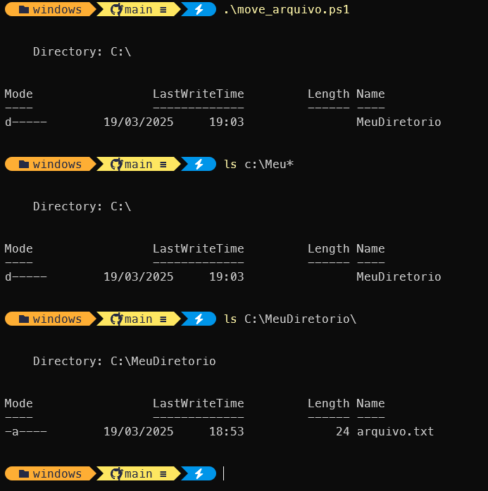

Criação de Scripts para Automação de Tarefas
Introdução
Scripts PowerShell são arquivos de texto que contêm uma série de comandos que são executados sequencialmente. Eles são fundamentais para automatizar tarefas repetitivas e simplificar a administração de sistemas.
Estrutura Básica de um Script
Um script PowerShell básico consiste em:
- Comandos PowerShell: Cada linha do script pode conter um comando PowerShell.
- Variáveis: Usadas para armazenar valores que podem ser usados em diferentes partes do script.
- Estruturas de Controle: Loops e condicionais permitem que o script tome decisões e execute ações repetidas.
Criando um Script
- Abrir um Editor de Texto:
- Como colocado no início da atividade, vamos usar o VSCode.
- Escrever o Script:
- Digite os comandos PowerShell que você deseja executar.
- Salvar o Arquivo:
- Salve o arquivo com a extensão
.ps1.
- Salve o arquivo com a extensão
Exemplo de Script Simples
Suponha que você queira criar um script que crie um diretório chamado "MeuDiretorio" no disco C e, em seguida, copie um arquivo chamado "arquivo.txt" para esse diretório.
Para facilitar, vamos manter o arquivo de origem dentro do diretório corrente desta atividade. Se você clonou, previamente, este repositório, o arquivo já existe.
Vá até o diretório em que clonou a atividade, ou o diretório que você criou no primeiro script, através so PS.
Crie um arquivo chamado move_arquivo.ps1 com o comando: code move_arquivo.ps1 e coloque o conteúdo a seguir. Não se esqueça de salvar!
# Criar um novo diretório
New-Item -ItemType Directory -Path "C:\MeuDiretorio"
# Copiar um arquivo para o diretório criado
Copy-Item "arquivo.txt" -Destination "C:\MeuDiretorio"
Se você clonou o repositório o arquivo.txt já existe, se você criou a pasta, crie um arquivo chamado arquivo.txt e coloque algum texto dentro dele. Mantenha o arquivo no mesmo diretório.
Executando o Script
- Abrir o PowerShell:
- Pressione
Win+R, digitepowershelle pressione Enter.
- Pressione
- Navegar até o Diretório do Script:
- Use o comando
cdpara ir até o diretório onde o script está salvo.
- Use o comando
- Executar o Script:
- Use o comando
.\nomeDoScript.ps1para executar o script.
- Use o comando
Exemplo:
{kind=link}
Dicas para Criar Scripts Eficientes
- Testar Comandos: Antes de criar um script, teste cada comando individualmente no PowerShell para garantir que ele funcione corretamente.
- Usar Variáveis: Variáveis podem ajudar a tornar o script mais flexível e reutilizável.
- Tratar Erros: Use try-catch para lidar com erros e manter o script estável.
Essas são as bases para criar scripts simples em PowerShell. Com prática, você pode automatizar tarefas complexas e melhorar a eficiência na administração de sistemas.